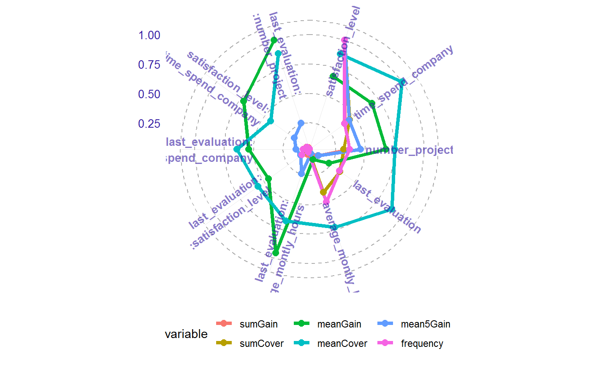
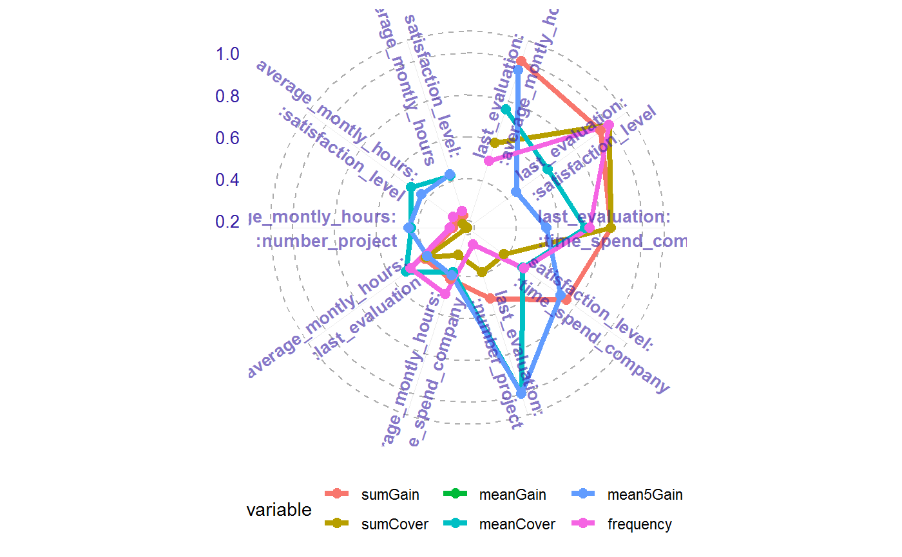
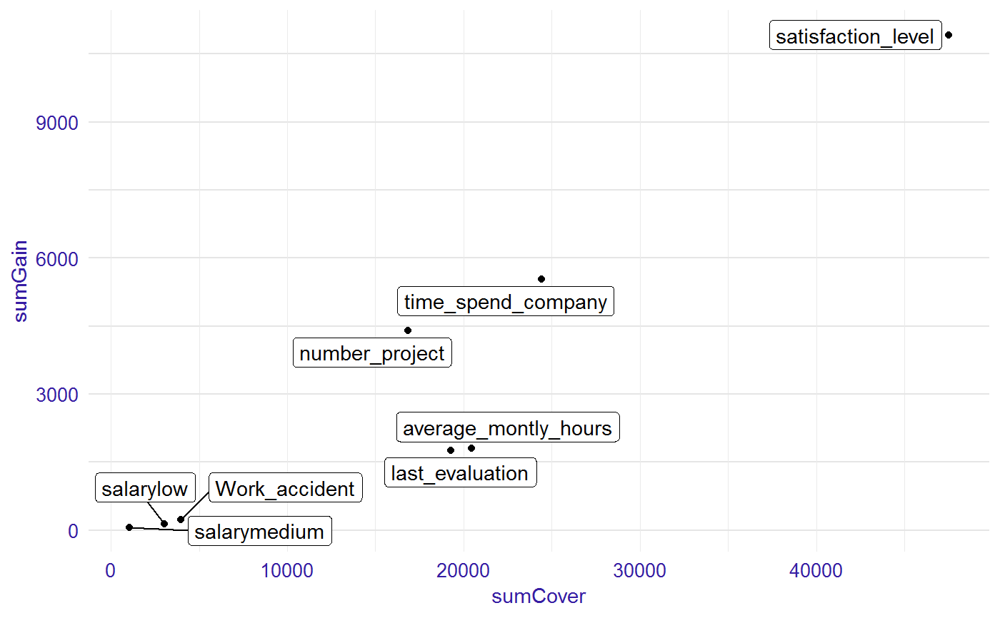
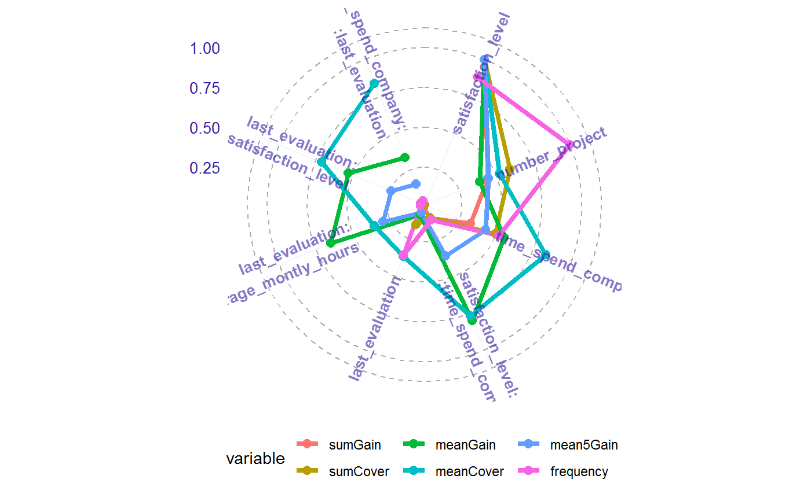
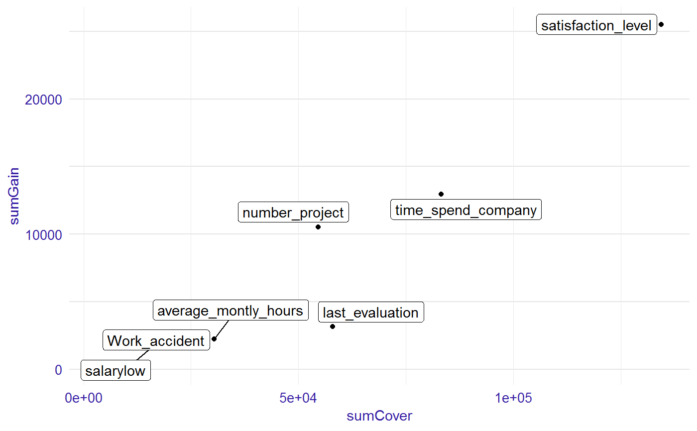

Plot importance measures
This functions plots selected measures of importance for variables and interactions. It is possible to visualise importance table in two ways: radar plot with six measures and scatter plot with two choosen measures.
# S3 method for importance plot(x, ..., top = 10, radar = TRUE, text_start_point = 0.5, text_size = 3.5, xmeasure = "sumCover", ymeasure = "sumGain")
Arguments
| x | a result from the |
|---|---|
| ... | other parameters. |
| top | number of positions on the plot or NULL for all variable. Default 10. |
| radar | TRUE/FALSE. If TRUE the plot shows six measures of variables' or interactions' importance in the model. If FALSE the plot containing two chosen measures of variables' or interactions' importance in the model. |
| text_start_point | place, where the names of the particular feature start. Available for `radar=TRUE`. Range from 0 to 1. Default 0.5. |
| text_size | size of the text on the plot. Default 3.5. |
| xmeasure | measure on the x-axis.Available for `radar=FALSE`. Default "sumCover". |
| ymeasure | measure on the y-axis. Available for `radar=FALSE`. Default "sumGain". |
Value
a ggplot object
Details
Available measures:
"sumGain" - sum of Gain value in all nodes, in which given variable occurs,
"sumCover" - sum of Cover value in all nodes, in which given variable occurs; for LightGBM models: number of observation, which pass through the node,
"mean5Gain" - mean gain from 5 occurrences of given variable with the highest gain,
"meanGain" - mean Gain value in all nodes, in which given variable occurs,
"meanCover" - mean Cover value in all nodes, in which given variable occurs; for LightGBM models: mean number of observation, which pass through the node,
"freqency" - number of occurrences in the nodes for given variable.
Additionally for plots with single variables:
"meanDepth" - mean depth weighted by gain,
"numberOfRoots" - number of occurrences in the root,
"weightedRoot" - mean number of occurrences in the root, which is weighted by gain.
Examples
library("EIX") library("Matrix") sm <- sparse.model.matrix(left ~ . - 1, data = HR_data) library("xgboost") param <- list(objective = "binary:logistic", max_depth = 2) xgb_model <- xgboost(sm, params = param, label = HR_data[, left] == 1, nrounds = 25, verbose=0) imp <- importance(xgb_model, sm, option = "both") imp#> Feature sumGain sumCover meanGain meanCover #> 1: satisfaction_level 9549.00 33480.0 502.60 1762.0 #> 2: time_spend_company 3902.00 16670.0 354.70 1516.0 #> 3: number_project 3645.00 11670.0 331.40 1061.0 #> 4: last_evaluation 993.00 9803.0 141.90 1400.0 #> 5: last_evaluation:average_montly_hours 702.10 697.7 702.10 697.7 #> 6: last_evaluation:time_spend_company 564.30 665.5 564.30 665.5 #> 7: last_evaluation:satisfaction_level 502.90 1374.0 502.90 1374.0 #> 8: average_montly_hours 487.50 6995.0 97.50 1399.0 #> 9: last_evaluation:number_project 390.20 1163.0 390.20 1163.0 #> 10: satisfaction_level:time_spend_company 332.20 753.6 332.20 753.6 #> 11: average_montly_hours:time_spend_company 262.60 549.2 262.60 549.2 #> 12: average_montly_hours:last_evaluation 249.10 837.4 249.10 837.4 #> 13: Work_accident 198.00 2820.0 98.99 1410.0 #> 14: satisfaction_level:average_montly_hours 168.40 496.0 168.40 496.0 #> 15: salarylow 90.24 1444.0 90.24 1444.0 #> 16: satisfaction_level:number_project 87.10 1096.0 87.10 1096.0 #> 17: time_spend_company:last_evaluation 86.27 1242.0 86.27 1242.0 #> 18: salarymedium 45.28 709.2 45.28 709.2 #> frequency mean5Gain #> 1: 19 1513.00 #> 2: 11 670.40 #> 3: 11 697.40 #> 4: 7 183.00 #> 5: 1 702.10 #> 6: 1 564.30 #> 7: 1 502.90 #> 8: 5 97.50 #> 9: 1 390.20 #> 10: 1 332.20 #> 11: 1 262.60 #> 12: 1 249.10 #> 13: 2 98.99 #> 14: 1 168.40 #> 15: 1 90.24 #> 16: 1 87.10 #> 17: 1 86.27 #> 18: 1 45.28#> Feature numberOfRoots weightedRoot meanDepth sumGain sumCover #> 1: satisfaction_level 11 8.9340 0.1598 10050.00 34850.0 #> 2: time_spend_company 3 0.1399 0.9042 5061.00 18640.0 #> 3: number_project 0 0.0000 1.0000 4122.00 13930.0 #> 4: average_montly_hours 3 0.0920 0.7652 1358.00 8189.0 #> 5: last_evaluation 5 0.4139 0.3519 1328.00 11880.0 #> 6: Work_accident 2 0.0381 0.0000 198.00 2820.0 #> 7: salarylow 1 0.0087 0.0000 90.24 1444.0 #> 8: salarymedium 0 0.0000 1.0000 45.28 709.2 #> meanGain meanCover frequency mean5Gain #> 1: 502.60 1743.0 20 1513.00 #> 2: 361.50 1332.0 14 751.50 #> 3: 317.10 1071.0 13 721.70 #> 4: 194.00 1170.0 7 241.70 #> 5: 147.60 1320.0 9 208.60 #> 6: 98.99 1410.0 2 98.99 #> 7: 90.24 1444.0 1 90.24 #> 8: 45.28 709.2 1 45.28#> Feature sumGain sumCover meanGain meanCover #> 1: last_evaluation:average_montly_hours 702.10 697.7 702.10 697.7 #> 2: last_evaluation:time_spend_company 564.30 665.5 564.30 665.5 #> 3: last_evaluation:satisfaction_level 502.90 1374.0 502.90 1374.0 #> 4: last_evaluation:number_project 390.20 1163.0 390.20 1163.0 #> 5: satisfaction_level:time_spend_company 332.20 753.6 332.20 753.6 #> 6: average_montly_hours:time_spend_company 262.60 549.2 262.60 549.2 #> 7: average_montly_hours:last_evaluation 249.10 837.4 249.10 837.4 #> 8: satisfaction_level:average_montly_hours 168.40 496.0 168.40 496.0 #> 9: satisfaction_level:number_project 87.10 1096.0 87.10 1096.0 #> 10: time_spend_company:last_evaluation 86.27 1242.0 86.27 1242.0 #> frequency mean5Gain #> 1: 1 702.10 #> 2: 1 564.30 #> 3: 1 502.90 #> 4: 1 390.20 #> 5: 1 332.20 #> 6: 1 262.60 #> 7: 1 249.10 #> 8: 1 168.40 #> 9: 1 87.10 #> 10: 1 86.27#> Feature numberOfRoots weightedRoot meanDepth sumGain sumCover #> 1: satisfaction_level 11 8.9340 0.1598 10050.00 34850.0 #> 2: time_spend_company 3 0.1399 0.9042 5061.00 18640.0 #> 3: number_project 0 0.0000 1.0000 4122.00 13930.0 #> 4: average_montly_hours 3 0.0920 0.7652 1358.00 8189.0 #> 5: last_evaluation 5 0.4139 0.3519 1328.00 11880.0 #> 6: Work_accident 2 0.0381 0.0000 198.00 2820.0 #> 7: salarylow 1 0.0087 0.0000 90.24 1444.0 #> 8: salarymedium 0 0.0000 1.0000 45.28 709.2 #> meanGain meanCover frequency mean5Gain #> 1: 502.60 1743.0 20 1513.00 #> 2: 361.50 1332.0 14 751.50 #> 3: 317.10 1071.0 13 721.70 #> 4: 194.00 1170.0 7 241.70 #> 5: 147.60 1320.0 9 208.60 #> 6: 98.99 1410.0 2 98.99 #> 7: 90.24 1444.0 1 90.24 #> 8: 45.28 709.2 1 45.28library(lightgbm) train_data <- lgb.Dataset(sm, label = HR_data[, left] == 1) params <- list(objective = "binary", max_depth = 2) lgb_model <- lgb.train(params, train_data, 25) imp <- importance(lgb_model, sm, option = "both") imp#> Feature sumGain sumCover meanGain meanCover #> 1: satisfaction_level 22290.0 77090 1013.00 3504 #> 2: number_project 9900.0 45910 396.00 1836 #> 3: time_spend_company 7284.0 38150 560.30 2934 #> 4: satisfaction_level:time_spend_company 2434.0 8112 811.30 2704 #> 5: last_evaluation 757.3 11550 84.14 1283 #> 6: last_evaluation:average_montly_hours 658.0 1249 658.00 1249 #> 7: last_evaluation:satisfaction_level 540.0 2500 540.00 2500 #> 8: time_spend_company:last_evaluation 341.3 2939 341.30 2939 #> frequency mean5Gain #> 1: 22 2227.0 #> 2: 25 997.4 #> 3: 13 955.7 #> 4: 3 811.3 #> 5: 9 151.5 #> 6: 1 658.0 #> 7: 1 540.0 #> 8: 1 341.3#> Feature numberOfRoots weightedRoot meanDepth sumGain sumCover #> 1: satisfaction_level 20 18.8300 0.08783 22830 79590 #> 2: number_project 0 0.0000 1.00000 9900 45910 #> 3: time_spend_company 4 0.1914 0.89110 9718 46260 #> 4: last_evaluation 1 0.0106 0.78610 1099 14490 #> 5: average_montly_hours 0 0.0000 1.00000 658 1249 #> meanGain meanCover frequency mean5Gain #> 1: 992.7 3460 23 2227.0 #> 2: 396.0 1836 25 997.4 #> 3: 607.4 2891 16 995.1 #> 4: 109.9 1449 10 219.7 #> 5: 658.0 1249 1 658.0